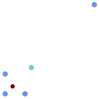

Name
ST_GeometricMedian — マルチポイントの幾何学的中央値を返します。
Synopsis
geometry ST_GeometricMedian ( geometry geom, float8 tolerance = NULL, int max_iter = 10000, boolean fail_if_not_converged = false);
説明
マルチポイントジオメトリの幾何中央値の近似値を、Weiszfeldアルゴリズムを使って計算します。幾何中央値は、入力ポイントとの距離の合計を最小にするポイントです。幾何中央値によって、重心よりもはみ出しにくい中心測定ができます。
このアルゴリズムでは、成功した回次の間の距離の変化が、toleranceパラメータよりも小さくなるまで繰り返します。max_iterations回を超えた場合には、関数はfail_if_not_convergedをFALSEに指定している (デフォルト)場合を除いて、エラーを生成して終了します。
tolerance値が渡されていない場合には、デフォルトの許容値は、入力ジオメトリの範囲を基に計算されます。
存在する場合には、入力ポイントのM値は相対的な重みに解釈されます。
Availability: 2.3.0
Enhanced: 2.5.0 ポイントの重みとしてのM値の対応が追加されました。
 この関数は3次元に対応し、Z値を削除しません。
この関数は3次元に対応し、Z値を削除しません。
この関数はM値に対応します。
例

マルチポイントの幾何的中央値 (赤)と重心 (青緑)との比較。
WITH test AS (
SELECT 'MULTIPOINT((10 10), (10 40), (40 10), (190 190))'::geometry geom)
SELECT
ST_AsText(ST_Centroid(geom)) centroid,
ST_AsText(ST_GeometricMedian(geom)) median
FROM test;
centroid | median
--------------------+----------------------------------------
POINT(62.5 62.5) | POINT(25.01778421249728 25.01778421249728)
(1 row)